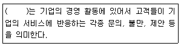
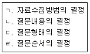
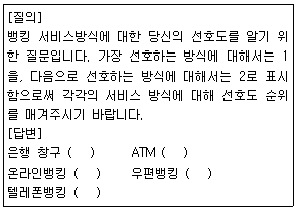
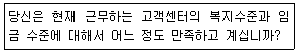
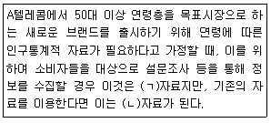
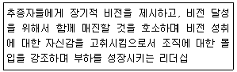
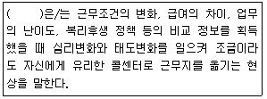
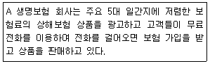
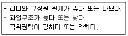
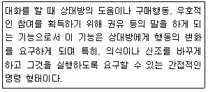

텔레마케팅관리사 (2019-03-03 기출문제)
1과목: 판매관리
1. 재포지셔닝이 필요한 상황과 가장 거리가 먼 것은?
- 기업 매출 증가
- 경쟁우위 열세
- 소비자 기호의 변화
- 제품속성 선택 실패
(정답률: 87%)

2. 아웃바운드 텔레마케팅의 특성으로 옳지 않은 것은?
- 고객주도형의 마케팅유형이다.
- 고객접촉률과 고객반응률을 중시한다.
- 대상고객의 명단이나 데이터가 있어야 한다.
- 고객에게 전화를 거는 능동적, 공격적, 성과지향적인 마케팅이다.
(정답률: 82%)
3. 마케팅에서 판매촉진 비중이 증가하게 된 주된 원인으로 볼 수 없는 것은?
- 광고노출 효과
- 소비자 가격 민감도
- 기업 간 경쟁의 완화
- 기업 내 판매성과 측정
(정답률: 79%)
4. 표적시장을 선택하기에 앞서 효과적인 시장세분화를 위해 충족되어야 하는 요건으로 볼 수 없는 것은?
- 측정가능성
- 기대가능성
- 접근가능성
- 유지가능성
(정답률: 61%)
5. 소비자에 의하여 자사의 제품 특성이 정의되는 것을 의미하며, 경쟁 브랜드에 비하여 차별적으로 받아들일 수 있도록 고객들의 마음속에 위치시키는 노력을 의미하는 것은?
- 제품 가격설정
- 제품 포지셔닝
- 제품 브랜딩
- 제품 촉진
(정답률: 79%)
6. 구매의사결정에 영향을 미치는 요인으로 볼 수 없는 것은?
- 개인적요인
- 심리적요인
- 사회적요인
- 정치적요인
(정답률: 87%)
7. 특정 상품이나 서비스에 대해 관심이 있는 고객으로부터 온 전화를 콜센터에서 받아 처리하는 텔레마케팅 유형은?
- 인사이드 텔레마케팅
- 인바운드 텔레마케팅
- 아웃사이드 텔레마케팅
- 아웃바운드 텔레마케팅
(정답률: 85%)
8. 마케팅믹스의 구성요소(4P)에 해당하지 않는 것은?
- 유통
- 가격
- 제품
- 고객
(정답률: 81%)
9. 마케팅의 범위를 대중고객과 개별고객으로 구분할 때, 마케팅 촉진수단별 마케팅 범위의 연결이 옳지 않은 것은?
- 광고 - 대중고객
- 인적판매 - 대중고객
- publity - 대중, 개별고객
- PR(public relations) - 대중, 개별고객
(정답률: 70%)
10. 마케팅 정보시스템에 관한 설명으로 옳지 않은 것은?
- 마케팅 정보시스템은 경영 정보시스템의 상위 시스템이다.
- 기업 내부 자료, 외부 자료와 정보를 체계적으로 관리한다.
- 경영자의 마케팅 의사 결정에 사용할 수 있도록 하는 정보관리 시스템이다.
- 마케팅을 보다 효과적으로 수행하기 위하여 관련된 사람, 고객의 정보, 기구 및 절차, 보고서 등을 관리하는 시스템을 말한다.
(정답률: 75%)
11. 회사가 제품에 대한 가격을 결정할 때 제품의 저가전략이 적합한 경우가 아닌 것은?
- 경쟁사가 많을 때
- 시장수요의 가격탄력성이 낮을 때
- 소비자들의 수요를 자극하고자 할 때
- 경쟁기업에 비해 원가우위를 확보하고 있을 때
(정답률: 80%)
12. 매우 비탄력적인 수요곡선을 지니는 신상품을 도입할 때 가장 적합한 가격책정전략은?
- 침투가격전략
- 초기할인전략
- 고가가격전략
- 경쟁가격전략
(정답률: 70%)
13. 아웃바운드 텔레마케팅 업무 시 관리자의 역할로 옳지 않은 것은?
- 텔레마케터가 고객과 통화할 수 있는 시간을 최대한 확보해 주어야 한다.
- 통계분석 등의 잔무에서 해방시켜 업무에 집중할 수 있는 여건을 마련해 주어야 한다.
- 통화 성공률을 시간대별로 분석하여 통화업무 집중 시간대를 조정할 수 있어야 한다.
- 고객 구매이력정보 등의 개인정보가 텔레마케터에게 노출되지 않도록 보안을 유지해야 한다.
(정답률: 79%)
14. STP 전략의 절차를 바르게 나열한 것은?
- 표적시장 선정 → 포지셔닝 → 시장세분화
- 포지셔닝 → 표적시장 선정 → 시장세분화
- 시장세분화 → 표적시장 선정 → 포지셔닝
- 시장세분화 → 포지셔닝 → 표적시장 선정
(정답률: 79%)
15. 유통경로의 원칙에 대한 설명으로 옳지 않은 것은?
- 총 거래 수 최소화 원칙: 유통경로를 설정할 때 중간상을 필요로 하는 원칙으로, 거래의 총량을 줄여 제조업자와 소비자 양측에게 실질적인 비용부담을 감소시키게 하는 원칙
- 집중준비의 원칙: 제조업자가 물품을 대량으로 보관하게 하여 소매상의 보관 부담을 덜어주는 원칙
- 분업의 원칙: 유통경로에서 수행되는 제반활동을 중간상을 통하여 특화, 분업화하여 효율성과 경제성을 향상하고자 하는 원칙
- 변동비 우위의 원칙: 중간상의 역할분담을 중시하여 결국에는 비용부담을 줄이는 원칙
(정답률: 64%)
16. 다음 괄호 안에 들어갈 알맞은 것은?

- 고객충성도
- 고객의 수요
- 고객의 니즈(needs)
- 고객의 소리(VOC)
(정답률: 79%)
17. 소비재 유형 중 선매품의 일반적인 소비자 구매행동으로 가장 거리가 먼 것은?
- 계획구매를 한다.
- 반복구매를 자주 하지 않는다.
- 쇼핑에 대한 노력을 적게 하게 한다.
- 가격, 품질, 스타일에 따라 상표를 비교한다.
(정답률: 80%)
18. 일반적인 아웃바운드 텔레마케팅의 활용분야로 볼 수 없는 것은?
- 직접 판매
- 가망고객 획득
- 반복구매 촉진
- 컴플레인 접수
(정답률: 80%)
19. 고객의 모든 정보를 전화 인입과 동시에 상담원의 모니터에 나타내주는 시스템은?
- ACD
- ANI
- ACRDM
- ADRMP
(정답률: 43%)
20. 다음 중 제품이 가지는 전문성이나 독특한 성격 때문에 대체품이 존재하지 않고 브랜드 인지도와 상표충성도가 높은 것은?
- 전문품
- 편의품
- 선매품
- 원재료
(정답률: 86%)
21. 서비스의 특성에 관한 설명으로 옳지 않은 것은?
- 소멸성 - 서비스는 저장하거나, 재판매하거나 돌려받을 수 없다.
- 비분리성 - 서비스는 제품의 특성과 분리되지 않고 동일하게 생산 후 소비가 된다.
- 무형성 - 서비스는 객체라기보다 행위이고 성과이기 때문에 유형적 제품처럼 보거나 느낄 수 없다.
- 이질성 - 서비스를 제공하는 행위자에 따라 오늘과 내일이 다르고 시간마다 달라질 수 있다.
(정답률: 53%)
22. 2개 혹은 그 이상의 세분시장을 표적시장으로 선정하고 각각의 세분시장에 적합한 제품과 마케팅 프로그램을 개발하여 공급하는 전략은?
- 차별화 마케팅
- 집중화 마케팅
- 노이즈 마케팅
- 다이렉트 마케팅
(정답률: 67%)
23. 가격의 특징으로 옳지 않은 것은?
- 정형화된 일정한 체계를 구축가기가 쉽다.
- 예기치 않은 상황에 의해 가격이 결정될 수도 있다.
- 마케팅 믹스 중에서 가장 강력한 경쟁도구이다.
- 수요가 탄력적인 시장상황에서 매우 쉽게 변경할 수 있는 요인이다.
(정답률: 63%)
24. 기업의 환경분석을 통해 강점과 약점, 기회와 위협 요인으로 규정하고 이를 토대로 마케팅 전략을 수립하는 기법은?
- 5 Force 분석
- 경쟁사 분석
- SWOT 분석
- 소비자 분석
(정답률: 81%)
25. 본사가 다른 업체와 계약을 맺고 그 업체가 일정기간동안 자사의 상호, 기업운영 방식 등을 사용하여 사업을 할 수 있도록 권한을 부여하는 유통 제도를 일컫는 말은?
- 소매상 제도
- 도매상 제도
- 분업화 제도
- 프랜차이즈 제도
(정답률: 85%)
2과목: 시장조사
26. 시장조사의 역할로 옳지 않은 것은?
- 의사결정력 제고
- 문제해결을 위한 조직적 탐색
- 타당성과 신뢰성 높은 정보획득
- 고객의 심리적#행동적 특성 배제
(정답률: 81%)
27. 면접조사의 원활한 자료수집을 위해 조사자가 응답자와 인간적인 친밀 관계를 형성하는 것은?
- 라포(rapport)
- 사회화(socialization)
- 개념화(conceptualization)
- 조작화(operationalization)
(정답률: 71%)
28. 어떤 정보를 얻기 위해서 연구대상으로 선정된 집단 전체를 무엇이라 하는가?
- 확률
- 추출틀
- 표본
- 모집단
(정답률: 73%)
29. 조사 시 활용되는 변수에 대한 설명으로 옳지 않은 것은?
- 교육수준에 따라 월평균소득에 차이가 있다면 월평균소득이 종속변수가 된다.
- 연속변수는 사람#대상물 또는 사건을 그들 속성의 크기나 양에 따라 분류하는 것이다.
- 이산변수는 시간, 길이, 무게 등과 같이 측정 시 최소한의 단위를 확정할 수 없을 때 사용하는 변수를 말한다.
- 독립변수는 한 변수(X)가 다른 변수(Y)에 시간적으로 선행하면서 X에 변화가 Y의 변화에 영향을 미칠 때 영향을 미치는 변수를 의미한다.
(정답률: 41%)
30. 비확률표본추출 방법에 해당하는 것은?
- 층화표본추출법
- 군집표본추출법
- 편의표본추출법
- 단순무작위표본추출법
(정답률: 65%)
31. 면접방법 중 조사자가 응답자를 직접 만나는 개인면접조사의 장점으로 볼 수 없는 것은?
- 조사자가 필요에 따라서 질문을 수정할 수 있다.
- 응답자의 응답이 모호해도 재질문을 할 수 없다.
- 질문을 반복하거나 변경함으로써 응답자의 반응을 살필 수 있다.
- 조사자는 응답자의 비언어(몸짓, 표정 등)에서도 반응을 살필 수 있다.
(정답률: 80%)
32. 일반적으로 응답률이 가장 낮은 조사 방법은?
- 웹조사
- 전화조사
- 우편조사
- 대인면접조사
(정답률: 78%)
33. 탐색조사의 종류가 아닌 것은?
- 문헌조사
- 전문가조사
- 횡단조사
- 사례조사
(정답률: 62%)
34. 실험설계의 내적타당성과 외적타당성을 저해하는 외생변수의 종류에 해당되지 않는 것은?
- 우발적 사건
- 표본의 균형
- 실험대상의 소멸
- 측정수단의 변화
(정답률: 56%)
35. 전화면접법에 대한 설명으로 옳지 않은 것은?
- 통화시간상 제약이 존재한다.
- 전화번호부를 표본프레임으로 선정하여 사용한다.
- 전화면접법은 링크 서베이(link survey)라고도 한다.
- 무작위로 전화번호를 추출(random-digit dialing)하는 방법이 사용된다.
(정답률: 56%)
36. 획득하고자 하는 정보의 내용을 대략 결정한 이후 이루어져야 할 질문지 작성과정을 바르게 나열한 것은?

- ㄱ → ㄴ → ㄷ → ㄹ
- ㄴ → ㄷ → ㄹ → ㄱ
- ㄴ → ㄹ → ㄷ → ㄱ
- ㄷ → ㄱ → ㄴ → ㄹ
(정답률: 57%)
37. 1차자료를 수집하는 방법과 특징에 대한 설명으로 옳지 않은 것은?
- 의사소통방법은 관찰방법에 비해 자료수집이 신속하다.
- 의사소통방법에 의해 자료를 수집하면 응답자가 응답을 회피하는 경우가 없다.
- 의사소통방법은 설문지나 응답자에게 직접 질문하여 자료를 얻는 방법이다.
- 관찰에 의한 방법은 관심 있는 어떤 상황을 측정하거나 응답자의 행동 또는 사건 등을 기록하는 방법이다.
(정답률: 75%)
38. 면접조사의 장#단점에 관한 설명으로 옳지 않은 것은?
- 장점: 심층질문이 가능하다.
- 단점: 응답률이 대체로 낮다.
- 단점: 면접원의 통제가 어렵다.
- 장점: 응답자의 적극적인 참여 유도가 가능하다.
(정답률: 73%)
39. 과학적 조사방법의 설명으로 옳지 않은 것은?
- 과학적 조사방법을 통해 시장조사과정과 분석과정에서 오류를 최소화하도록 해야한다.
- 과학적 조사방법은 개인적 경험, 직관, 감성을 근거로 자료를 수집하여 시장문제를 분석한다.
- 과학적 조사방법으로 시장의 문제점을 발견하고, 원인규명을 통하여 시장문제를 예측할 수 있다.
- 조사자는 시장문제를 구성하고 있는 요소들을 구분하고 그 상호관계를 분석함으로써 시장문제의 원인을 파악하고 해결방안을 모색한다.
(정답률: 82%)
40. 다음 문항은 어떤 수준의 측정인가?

- 비율수준의 측정
- 등간수준의 측정
- 명목수준의 측정
- 서열수준의 측정
(정답률: 69%)
41. 다음 설문 문항에서 나타나는 오류는?

- 대답을 유도하는 질문을 하였다.
- 단어들의 뜻을 명확하게 설명하지 않았다.
- 하나의 항목으로 두 가지 내용을 질문하였다.
- 응답자들에게 지나치게 자세한 응답을 요구하였다.
(정답률: 76%)
42. 다음 괄호 안에 들어갈 알맞은 것은?

- ㄱ: 1차, ㄴ: 2차
- ㄱ: 1차, ㄴ: 3차
- ㄱ: 2차, ㄴ: 1차
- ㄱ: 2차, ㄴ: 3차
(정답률: 65%)
43. 전수조사와 비교하여 표본조사가 가지는 이점으로 볼 수 없는 것은?
- 시간과 비용, 인력을 절약할 수 있다.
- 조사대상자가 적기 때문에 조사과정을 보다 잘 통제할 수 있다.
- 통계자료로부터 올바른 모수추정이 어려운 경우에 더 효율적이다.
- 비표본오류를 상대적으로 더 많이 줄일 수 있기 때문에 정확도를 높일 수 있다.
(정답률: 45%)
44. 마케팅조사 업체들이 조사 업무 수행 시 지켜야 할 사항으로 볼 수 없는 것은?
- 사전에 정한 표본추출대상을 추출하고 정확한 조사를 실시해야 한다.
- 면접원의 교육과 감독을 철저히 하여 올바른 자료가 수집되도록 해야 한다.
- 조사 자료의 분석과 해석은 조사 의뢰 회사가 원하는 방향으로 맞추어서 해야 한다.
- 조사실시과정에서 일어난 오류는 조사 의뢰 회사에 보고해야 한다.
(정답률: 77%)
45. 비확률표본추출방법의 종류 중 인구통계적 요인, 경제적 요인, 사회#문화#환경적 요인 등의 분류기준에 의해 전체 표본을 여러 집단으로 구분하고 각 집단별로 필요한 대상을 사전에 정해진 비율로 추출하는 방법은?
- 할당표본추출법(quota sampling)
- 판단표본추출법(judgement sampling)
- 편의표본추출법(convenience sampling)
- 층화표본추출법(stratified random sampling)
(정답률: 54%)
46. 측정도구의 타당도에 관한 설명으로 옳지 않은 것은?
- 내용타당도(content validity)는 전문가의 판단에 기초한다.
- 구성타당도(construct validity)는 예측타당도(predictive validity)라 한다.
- 동시타당도(concurrent validity)는 신뢰할 수 있는 다른 측정도구와 비교하는 것이다.
- 기준관련 타당도(criterion-related validity)는 내용타당도보다 경험적 검증이 용이하다.
(정답률: 47%)
47. 면접조사 시 면접조사원이 지켜야할 사항과 가장 거리가 먼 것은?
- 응답자가 불필요한 말을 할 때는 질문에 관련된 화제로 자연스럽게 유도한다.
- 응답자가 왜 하필이면 자기가 선정되었냐고 질문하면 “귀하는 무작위로 선정되었고 표집 원칙상 귀하에게 반드시 질문을 해야 한다.”고 응답한다.
- 면접조사를 할 때 친구나 다른 사람을 대동하는 것이 응답자의 어색함을 덜어주므로 가급적 함께 다닌다.
- 한 가족은 대체로 비슷한 의견이나 태도를 지니고 있기 때문에 한 가구당 한 사람으로부터 응답을 받는다.
(정답률: 55%)
48. 고정된 일정수의 표본가구 또는 개인을 선정하여 반복적으로 조사에 활용하는 방법은?
- 소비자패널 조사
- 신디케이트 조사
- 옴니버스 조사
- 가정유치 조사
(정답률: 51%)
49. 마케팅 조사의 과학적 특성으로 적절하지 않은 것은?
- 이론적으로 근거가 있는 객관적 사실에 입각하여 자료를 수집한다.
- 현재의 사실에만 국한하여 사실의 원인을 설명해야 한다.
- 구성요소들의 상관관계, 원인 등을 분석한다.
- 이론이나 가설이 보편적으로 적용될 수 있어야 한다.
(정답률: 77%)
50. 질문의 유형 중 폐쇄형 질문의 장점이 아닌 것은?
- 부호화(coding)와 분석이 용이하다.
- 측정에 통일성을 기할 수 있어 신뢰성을 높일 수 있다.
- 응답의 처리가 간편하고 신속해 질문지 완성이 용이하다.
- 한정된 응답지 가운데 선택하도록 되어 있기 때문에 응답자의 의견을 충분하게 반영시킬 수 있다.
(정답률: 74%)
3과목: 텔레마케팅관리
51. 임금의 계산 및 지불방법을 의미하는 임금형태에 대한 설명으로 틀린 것은?
- 변동급제에는 성과급제, 상여급제가 있다.
- 고정급제에는 시간급제, 일급제, 주급제, 월급제, 연봉제가 있다.
- 일을 기준으로 연공급, 직능급, 사람을 기준으로 직무급, 성과급으로 분류할 수 있다.
- 경영이 안정 지향적이냐 혹은 성장 지향적이냐에 따라 고정급과 성과급으로 구분된다.
(정답률: 63%)
52. 콜센터의 생산성을 향상시킬 수 있는 방안과 가장 거리가 먼 것은?
- 전반적인 업무환경(콜센터환경)을 개선한다.
- 콜센터 인력을 신규인력으로 대폭 교체한다.
- 텔레마케터 성과에 대한 인센티브를 강화한다.
- 콜센터의 인력(리더 및 상담원 등)에 대한 교육을 강화한다.
(정답률: 81%)
53. 개인 혹은 집단의 조직변화에 대한 거부적 행위를 변화에 대한 저항(resistance to change) 이라고 하는데 이 변수에 속하지 않는 것은?
- 갈등
- 근무의욕 감퇴
- 조직 내 불신
- 정시 출퇴근
(정답률: 82%)
54. 역량관리를 위한 직무분석의 내용으로 옳지 않은 것은?
- 역량관리는 직무를 수행할 종업원을 분석하는 것이 아니라 직무를 분석한다.
- 역량관리는 개인의 역량과 조직의 목표 간 직접적인 연결 관계가 있다.
- 역량관리는 성공적 직무수행에 반드시 필요한 것이라고 규명된 일련의 역량세트로 구성된다.
- 역량관리는 직무의 담당자가 일을 성공적으로 수행할 수 있는 역량을 갖는 것에 초점을 맞춘다.
(정답률: 75%)
55. 다음은 어떤 리더십에 관한 설명인가?

- 거래적 리더십
- 변혁적 리더십
- 전략적 리더십
- 자율적 리더십
(정답률: 59%)
56. 콜센터 조직의 인력 채용 및 선발에 대한 설명으로 가장 적합한 것은?
- 슈퍼바이저, 강사 등 관리자는 가능한 외부에서 선발하는 것이 바람직하다.
- 상담사는 경력자보다는 비경력자를 선발하는 것이 바람직하다.
- 직무별 요구자질에 따른 선발기준이 객관적으로 마련되어 있어야 한다.
- 상담사 인력투입은 적응기간을 고려하여 1주일 전에 선발하도록 한다.
(정답률: 73%)
57. 다음에서 설명하구 있는 콜센터의 현상은?

- 유리천장
- 철새둥지
- 콜센터 심리공황
- 콜센터 바이러스
(정답률: 68%)
58. 다음에서 설명하고 있는 텔레마케팅의 유형이 올바르게 나열된 것은?

- 인바운드(Inbound), 기업 대 소비자(B to C)
- 인바운드(Inbound), 기업 대 기업(B to B)
- 아웃바운드(Outbound), 기업 대 소비자(B to C)
- 아웃바운드(Outbound), 기업 대 기업(B to B)
(정답률: 74%)
59. 콜센터 조직에서 상담사에게 필요한 동기부여의 조건이 아닌 것은?
- 칭찬과 인정
- 자부심과 소속감
- 상사의 권위적 리더십
- 업무에 몰입할 수 있는 분위기 조성
(정답률: 82%)
60. 조직관리의 목적으로 옳지 않은 것은?
- 운영전략과 수행 효율성의 최적화를 이룬다.
- 인적자원의 능력을 초과한 업무수행이 가능하도록 한다.
- 충성심과 애호도를 높일 수 있도록 교육 및 훈련을 시킨다.
- 조직의 역할이 최적화 될 수 있도록 구성원 간의 역할과 기능을 명확히 한다.
(정답률: 76%)
61. 'House'가 제시한 목표-경로 모형의 리더십 유형에 관한 설명으로 틀린 것은?
- 후원적 리더십 - 부하의 복지와 욕구에 관심을 가지며 배려적이다.
- 참여적 리더십 - 하급자들과 상의하고 의사결정에 참여시키며 팀워크를 강조한다.
- 성취지향적 리더십 - 일상적 수준의 목표를 가지고 지속적인 성과를 달성할 수 있도록 유도한다.
- 지시적 리더십 - 조직화, 통제, 감독과 관련되는 행위, 규정, 작업일정을 수립하고 직무의 명확화를 기한다.
(정답률: 31%)
62. 콜센터 조직의 변화의 슬로건이 '즐겁고 행복한 콜센터 조직문화 만들기'일 경우 나타날 수 있는 조직의 변화로 옳지 않은 것은?
- 칭찬과 인정이 넘쳐나는 조직으로 변화
- 풍부한 감성이 묻어나는 조직으로 변화
- 상명하복이 바탕이 된 수직조직으로 변화
- 다름과 차이를 인정할 수 있는 조직으로 변화
(정답률: 80%)
63. 모니터링 평가 시 고려 요소의 하나로서 고객들이 실제로 상담원에게 어떻게 대우를 받았는지에 대한 서비스 평가와 서비스 모니터링 점수가 일치해야 하는 것을 의미하는 것은?
- 모니터링의 객관성
- 모니터링의 차별성
- 모니터링의 타당성
- 모니터링의 대표성
(정답률: 61%)
64. 콜센터 운영 및 전략수립에 관한 내용으로 적절하지 않은 것은?
- 제품의 가격을 고려할 때 고객이 부담없이 접근할 수 있는 가격대가 좋다.
- 콜센터 운영에 적합한 제품이나 서비스를 선택할 때 신뢰성이 없는 제품이나 서비스도 선택하는 것이 유리하다.
- 텔레마케팅 전략의 수립은 고객에 대한 접근의 틀을 제공하고 고객으로부터의 신뢰창출 및 매출증대, 고객서비스 향상에 결정적인 영향을 미친다.
- 아웃바운드형 콜센터를 운영할 때에는 전화를 거는 주고객층의 데이터를 직접 확보하거나 간접적인 제휴방식을 통해 확보할 수 있어야 한다.
(정답률: 75%)
65. 다음과 같은 요인들의 상호작용을 통해서 나타날 수 있는 리더십 이론은?

- 리더십 특성이론
- 리더십 관계이론
- 리더십 상황이론
- 리더-구성원 상호작용이론
(정답률: 37%)
66. OJT(On the Job Training) 교육단계로 옳은 것은?
- 학습준비 → 업무설명 → 업무실행 → 결과확인
- 업무실행 → 학습준비 → 업무설명 → 결과확인
- 업무실행 → 결과확인 → 업무설명 → 학습준비
- 업무실행 → 업무설명 → 학습준비 → 결과확인
(정답률: 71%)
67. 인바운드형 콜센터 조직에 대한 설명으로 옳은 것은?
- 인바운드형 콜센터는 고객이 전화했으므로 전문적인 상담스킬을 필요로 하지 않는다.
- 인바운드형 콜센터는 무엇보다 고객상담 서비스의 질적인 관리와 업그레이드가 요구된다.
- 외부로부터 걸려오는 전화를 받아서 처리하는 곳이기 때문에 전화량을 사전예측할 필요가 없다.
- 인바운드형 콜센터는 각종 광고나 알림, 서비스 개선 약속을 대중매체를 통해 전달하는 곳이다.
(정답률: 73%)
68. 인적자원의 개발을 위한 교육훈련의 성과를 측정하기 위한 평가 방법에 관한 설명으로 옳지 않은 것은?
- 전이 평가 - 교육의 결과를 얼마나 현업에서 활용하고 있는지를 측정한다.
- 학습 평가 - 실제 교육을 통해 향상된 지식과 기술 및 태도를 측정한다.
- 반응 평가 - 설문을 통해 피교육자가 교육을 어떻게 생각하는지 조사한다.
- 효과성 평가 - 교육의 결과를 얼마나 동료에게 효과적으로 전달했는지 평가한다.
(정답률: 51%)
69. 표준 작업일 상담원 실근무시간 등의 상황변수를 토대로 보다 현실적이고 실제적으로 콜센터 업무를 계획하는 것은?
- 포기콜률
- 주문획득률
- 수신콜 응답률
- 콜센터 스케줄링
(정답률: 76%)
70. 텔레마케팅의 개념에 대한 설명 중 옳지 않은 것은?
- 텔레마케팅은 고객과 1 : 1의 커뮤니케이션을 통해 이루어진다.
- 텔레마케팅은 각종 통신수단을 활용한 적극적이고 역동적인 마케팅이다.
- 텔레마케팅은 데이터베이스 마케팅기법을 응용하여 마케팅을 전략적으로 활용할 수있다.
- 텔레마케팅은 기업이나 조직의 마케팅활동이므로 사회적, 서비스적 기능을 갖고 있지 않다.
(정답률: 78%)
71. 직무만족의 의의를 직원의 개인적인 측면과 조직의 측면으로 나누어 생각할 수 있는데 조직의 입장에서 살펴본 직무만족에 관한 설명으로 가장 거리가 먼 것은?
- 직장은 직원들이 하루 중 대부분의 시간을 보내는 곳으로 직무만족도가 높으면 삶의 만족도도 높다.
- 직무만족이 높으면 이직률이 감소하여 직원의 생산성 증가효과가 있다.
- 직무만족을 하는 직원은 조직내부 및 조직외부에서 원만한 인간관계를 유지한다.
- 자신의 조직에 긍정적인 감정을 가진 직원은 조직에 호의적이다.
(정답률: 50%)
72. 직무분석의 방법 중 관찰법에 대한 설명으로 옳은 것은?
- 대상 직무의 작업자가 많은 시간을 할애해야 한다.
- 다른 작업자를 감독하거나 조정하는 등의 직무내용에 적합하다.
- 분석자의 주관이 개입될 위험이 적다.
- 분석자는 대상업무에 대한 전문적 지식이 필요 없다.
(정답률: 46%)
73. 콜센터 상담원의 역할 스트레스에서 역할모호성의 영향 요인 중 개인적 요인에 해당하는 것은?
- 피드백(feedback)
- 고려(consideration)
- 권한위임(empowewment)
- 직무경험(duty experience)
(정답률: 61%)
74. 콜센터 내의 팀 업무성과관리에 대한 설명으로 틀린 것은?
- 팀 목표를 설정하면 1년은 목표의 변경없이 목표를 달성해야 한다.
- 성과관리는 지속적인 과정으로서 1년에 1회씩 등급을 판정하는 연례행사가 아니다.
- 팀은 주요 목표달성 상황을 지속적으로 추적하고 토의, 평가하고 의견을 수렴하여야 한다.
- 업무성과관리는 팀이 고객을 만족시키는 능력을 개선하기 위해 노력하는 것에 초점을 맞춰야 한다.
(정답률: 71%)
75. 리더십의 정의에 있어서 전제적 가정이 잘못된 것은?
- 지도자(leader)는 추종자(follower)가 있어야 한다.
- 지도자(leader)는 추종자(follwer)보다 많은 권력을 가진다.
- 리더십은 추종자의 행동에 영향을 미치기 위하여 상이한 권력 형태를 이용한다.
- 지휘는 조직의 관리 기능 중의 하나이며 조직구성원의 비행동적 측면을 다룬다.
(정답률: 59%)
4과목: 고객응대
76. 고객관계관리(CRM: Customer Relationship Management) 의 등장배경에 대한 설명으로 옳지 않은 것은?
- 고객관계관리는 e-business 전략과는 무관하다.
- 기업이 가치 있는 고객을 중심으로 기업경영을 함에 따라 고객의 중요성은 점차 증대되고 있다.
- 기존의 대량생산체제 아래의 고객관리에서 벗어나 타깃(target)중심, 개별고객중심의 고객관리를 지향한다.
- 고객에 대한 마케팅 활동이 파레토의 법칙(80:20)에 의해 고객에 의한, 고객에 대한 새로운 분류와 평가가 이루어지고 있다.
(정답률: 76%)
77. 다음 중 고객가치 측정방법에 해당하지 않는 것은?
- RFM
- 시장점유율
- 고객점유율
- 고객생애가치
(정답률: 64%)
78. 우수한 고객관계관리를 통한 기업의 이득이 아닌 것은?
- 경쟁기업의 성장
- 고객의 상품 재구매
- 고객만족과 직원만족
- 기업에 대한 긍정적 이미지 형성
(정답률: 77%)
79. 메타그룹의 산업보고서에서 처음 제안된 CRM 시스템 아키텍처(architecture)의 3가지 구성요소에 포함되지 않는 것은?
- 분석CRM
- 운영CRM
- 협업CRM
- 통합CRM
(정답률: 49%)
80. 고객 성격의 특성에 따른 상담요령으로 옳지 않은 것은?
- 급한 성격은 신속하게 행동하고 설명도 핵심만 강조한다.
- 결단성이 없는 성격은 기회를 잡아 빨리 요점만 설명한다.
- 내성적인 성격은 조용하게 응대하고 상대의 의견을 충분히 들어준다.
- 흥분을 잘하는 성격은 부드러운 분위기를 유지하며 강압하지 않는다.
(정답률: 69%)
81. 관계마케팅 전략 개발을 위한 요소와 그에 대한 설명으로 틀린 것은?
- 제품 - 동일한 제품을 가지고 새로운 고객을 찾는 전략이 필요하다.
- 종업원 - 종업원들에 대한 적극적인 인적관리가 필요하다.
- 고객 - 모든 고객을 대상으로 관계구축을 하는 것보다 고객 충성도가 높은 고객을 대상으로 한다.
- 측정 - 측정내용을 계량화하여 정확한 마케팅 효과를 측정할 수 있게 한다.
(정답률: 49%)
82. 다음 중 언어적 의사소통의 도구는?
- 표정
- 몸짓
- 음성
- 스크립트
(정답률: 33%)
83. CRM에 대한 설명으로 틀린 것은?
- CRM은 고객점유율보다 시장점유율을 중시한다.
- CRM은 고객과 일대일관계를 중시한다.
- CRM은 통합된 멀티채널을 활용한다.
- CRM은 상호적 서비스를 제공한다.
(정답률: 76%)
84. 라포(rapport) 에 대한 설명으로 옳지 않은 것은?
- 상대방에 대한 관심을 가짐으로서 형성될 수 있다.
- 성공적인 상담을 이끌어 가기 위하여 라포형성은 매우 중요하다.
- 상담 시 고객마다 응대하는 방법이 다르므로 항상 중요하게 생각하지 않아도 무방하다.
- 상담사가 따뜻한 관심을 가지고 상대방을 대할 때 라포가 형성될 수 있다.
(정답률: 78%)
85. CRM 도입에 따른 기대효과로 가장 거리가 먼 것은?
- 고객 DB의 분산
- 고객 DB의 적극적 활용
- 고객서비스 프로세스 개선
- 다양한 고객요구에 대한 적극적 대처
(정답률: 78%)
86. 기업에서 고객만족을 위해 고객서비스를 중요하게 고려해야 하는 이유로 가장 옳은 것은?
- 전반적인 고객서비스에 대한 고객의 기대가 핵심제품에 대한 기대보다 높기 때문이다.
- 인터넷의 대중화로 판매자와 고객 간의 대면기회가 감소하고 있기 때문이다.
- 내부고객에 대한 고객서비스가 외부고객에 대한 고객서비스로 연결되기 때문이다.
- 제품의 물리적 품질에 큰 차이가 없으면 소비자들은 고객서비스를 통해 전체 품질을 평가하기 때문이다.
(정답률: 63%)
87. 까다로운 고객을 설득하는 방법 중 공감을 표시하는 말로 적당하지 않은 것은?
- “고객님 말씀을 충분히 이해합니다.”
- “제 말을 이해하지 못하시는 것 같습니다.”
- “현재 최선을 다해 방법을 찾고 있습니다.”
- “정말 뭐라 말씀드려야 할지 모를 정도로 면목이 없습니다.”
(정답률: 73%)
88. CRM을 실현하기 위한 정보기술에 해당되지 않는 것은?
- 고객만족지수
- 데이터마이닝
- 마케팅 채널
- 데이터 웨어하우스
(정답률: 31%)
89. 구매전 상담에서 제품정보를 제공하는 목적과 가장 거리가 먼 것은?
- 기업의 좋은 이미지를 형성하려는 목적이다.
- 경쟁제품과 비교할 수 있도록 하는 것이다.
- 소비자가 충동 구매할 수 있게 만드는 것이다.
- 소비자가 지불하는 제품 값과 품질의 합리성을 설명하는 것이다.
(정답률: 66%)
90. 다음 중 수다쟁이형 고객의 상담요령으로 가장 적합한 것은?
- 근거가 되는 구체적 자료를 제시한다.
- 맞장구와 함께 천천히 용건에 접근한다.
- 묻는 말에 대답하고 의사 표현은 하지 않는다.
- 한 가지 상품을 제시하고, 고객을 대신하여 결정을 내린다.
(정답률: 77%)
91. 고객의 반론을 극복하기 위한 방법과 가장 거리가 먼 것은?
- 참을성 있게 공감적 경청을 한다.
- 최대한 회사의 입장에서 고객을 설득한다.
- 거절이나 반론에 대한 두려움을 없앤다.
- 고객의 니즈를 집중적으로 분석하여 관심을 유도한다.
(정답률: 72%)
92. 다음에서 설명하는 상담의 기능으로 옳은 것은?

- 친화적인 기능
- 사고형성의 기능
- 정서표현의 기능
- 명령#설득의 기능
(정답률: 54%)
93. 고객과의 상담과정에서 재 진술을 하는 목적이나 효과로 가장 거리가 먼 것은?
- 고객의 이야기를 적극적으로 듣고 있다는 신뢰감을 줄 수 있다.
- 고객의 문제 또는 욕구를 명확하게 이해할 수 있다.
- 상담사가 잘못 이해했던 부분을 발견할 수 있다.
- 고객은 더 이상 자신의 문제나 욕구를 설명할 필요가 없게 된다.
(정답률: 77%)
94. 개방형 질문에 관한 설명으로 옳지 않은 것은?
- 고객으로부터 많은 의견과 정보를 기대할 수 있다.
- 개방형 질문은 비교적 상담 후반에 사용하는 것이 효과적이다.
- 개방형 질문은 답변하는 사람에 따라 말의 내용과 분량이 달라진다.
- 개방형 질문에 대한 고객의 답변에 이어 필요하다면 다른 내용을 추가로 질문함으로써 고객의 욕구를 명확하게 파악할 수 있게 된다.
(정답률: 71%)
95. 커뮤니케이션 과정에서 전달과 수신 사이에 발생하며 의사소통을 왜곡시키는 요인을 의미하는 것은?
- 잡음(noise)
- 해독(decoding)
- 피드백(feedback)
- 부호화(encoding)
(정답률: 74%)
96. 양방향 의사소통의 구성요건에 해당하지 않는 것은?
- 의사소통을 일으키는 발신자가 있어야 한다.
- 발신된 메시지를 받아들이는 수신자가 있어야 한다.
- 발신자와 수신자 사이에 의사소통이 일어나는 통로가 있어야 한다.
- 반드시 말하기와 쓰기가 이루어질 수 있는 환경이 있어야 한다.
(정답률: 77%)
97. 텔레마케터의 바람직한 음성연출로 가장 거리가 먼 것은?
- 알맞은 음량
- 또렷한 목소리
- 동일한 목소리 톤
- 적당한 말의 속도
(정답률: 80%)
98. 기업이 고객과 직ㆍ간접적으로 접촉하는 모든 채널과 방법들을 유기적으로 연관시키는 CRM의 형태는?
- 기능적 CRM
- 고객접점 통합 CRM
- 전략적 CRM
- 운영적 CRM
(정답률: 60%)
99. 텔레마케팅을 통한 고객상담에 대한 설명으로 옳지 않은 것은?
- 통신장비를 활용한 비대면 중심의 커뮤니케이션이다.
- 언어적인 메시지와 비언어적인 메시지를 동시에 사용할 수 있다.
- 고객을 직접 만나는 것이 아니기 때문에 응대의 결과와 반응은 그다지 중요하지 않다.
- 고객과 텔레마케터 간에 제품구매 또는 서비스거래 등의 커뮤니케이션 행위가 일어난다.
(정답률: 73%)
100. 고객관계유지를 위한 CRM의 역할로 볼 수 없는 것은?
- 고객 니즈 분석
- 고객평가 및 세분화
- 집단화 및 획일화
- 고객이탈 방지
(정답률: 70%)